AI Academy · Level 1 · Grade 6 · Week 3 · Student lesson
Sensors Are Messengers
Learn to understand, design, build, test and explain AI systems responsibly.
Project: Helpful Classroom Sorter
Before you start
Week 2: distinguish input, processing and output.
Plan time to read, investigate and explain. Keep predictions separate from observations.
Student lesson · 1 of 18
Your mission
Start with the target: Describe a measurement using its quantity, value, unit and conditions. Try the recall before opening notes.
Your learning target
I can describe a measurement using its quantity, value, unit and conditions.
I can distinguish a sensor reading from an interpretation or decision.
I can use repeated comparisons to investigate a measurement problem without inventing certainty.
Remember before reading
Close your notes first. A rough first answer helps us choose the right starting point; it is not a score for your ability.
Without opening the old lesson, explain one key idea from Input, Process, Output. Give an example and a mistake that the idea helps you avoid.
After trying, check the relevant lesson or ask your teacher. Change the part of your explanation that the evidence shows was wrong.
Sensors measure signals; later processing gives those signals meaning.
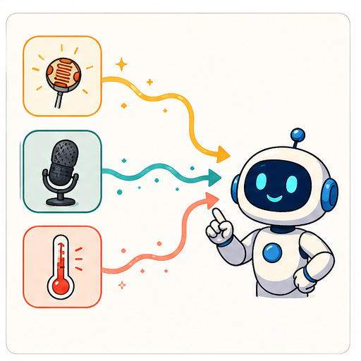
Your target
LEARNING TARGET Two light sensors report 40 and 80 in different rooms. Their settings and units are unknown. Can you conclude the second room is twice as bright?
Design a fair comparison without using a camera or personal data.
Learner name:
Readiness for the connected explanation
A record retains only the highest temperature of a day. Can it establish when that temperature occurred? Explain using two possible records.
This week’s end goal
By the end, I can compare sensor readings while controlling where and when they are measured.
Student lesson · 2 of 18
Notice the evidence
Investigate the supplied Sensors Are Messengers case. Separate observations, given facts and assumptions before choosing an explanation.
PICTURE STORY
Look Closely Before You Explain
Pictures give clues; evidence tells us what the clues mean.

Start with this puzzle
MYSTERY A classroom weather station measures light, sound, and temperature but does not decide what those measurements mean.
What do you notice?
Name three visible details without explaining them yet.
Circle the detail most connected to the system's decision.
Name one detail that may be decoration or distraction.
Make a first prediction and state the clue that supports it.
My observations, prediction, and evidence:
Thinking habit
GOOD THINKING A prediction can change when stronger evidence appears.
A closer explanation
A garden display shows 24. Is that warm? We cannot interpret the number until we know what was measured and the unit.
It might mean 24 degrees Celsius, 24 percent soil moisture according to a particular device, or 24 hours since watering. The screen alone does not supply the missing meaning.
A useful measurement record names the quantity, value, unit, time and relevant conditions. For air temperature, the location and exposure matter: a device in direct sunshine may warm differently from one in shade.
Record the conditions rather than assuming that every nearby device measured the same situation.
Measurement is a way of representing part of the physical world. It does not capture everything about that world.
One air-temperature reading does not tell us how dry the roots are, whether a plant is diseased or whether watering is permitted.
Student lesson · 3 of 18
See how it works
Follow the mechanism for Sensors Are Messengers. Connect each labelled input, deciding step and result.
VISUAL MECHANISM
Input → Process → Output
Follow the information instead of imagining magic inside the machine.
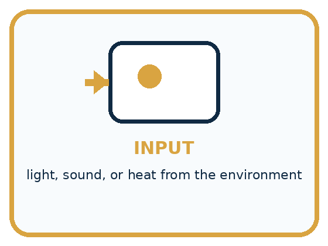
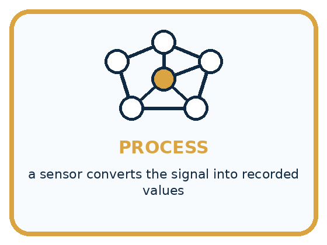
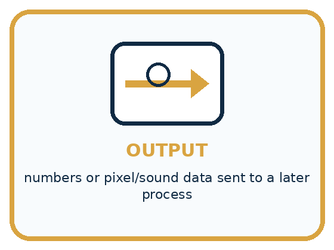
INPUT light, sound, or heat from the environment
PROCESS a sensor converts the signal into recorded values
OUTPUT numbers or pixel/sound data sent to a later process
Key idea
CORE IDEA Sensors measure signals; later processing gives those signals meaning.
How the mechanism works
UNDER THE HOOD A sensor is a transducer: it converts a physical quantity into a signal a computing system can represent. Sensing and interpretation are separate.
A camera measures light; an image model may later infer a label.
Draw a fresh example with all three stages:
A closer explanation
Three different stages in a garden system
The sensor responds to a physical quantity. Electronics convert the response into a recorded value. A later program can compare the value with a threshold.
Nothing about this path requires us to claim that the sensor understands plant health.
The rule uses exceeds 28, so a reading of exactly 28 does not trigger it. At 29 it does.
This boundary is a property of the written rule; it is separate from the question of whether the measuring device is accurate enough for the intended purpose.
The sensor measures. The rule decides.
This model uses a made-up light scale, from 0 (darker) to 100 (brighter).
Rule: if reading is below 30, turn the lamp on; otherwise turn it off.
Lamp ON
Try 29, then 30. Which part measured the light, and which part chose the action?
Connect the picture and the explanation
Point to the input, the deciding step and the result in this week’s visual. Explain the same step in ordinary words. A picture helps when you can say what each part represents.
Student lesson · 4 of 18
Compare the cases
Compare the supplied cases for Sensors Are Messengers. Identify the detail that changes the conclusion.
PICTURE GALLERY
Four Cases, Four Clues
Use the visual cue, then read the evidence carefully.
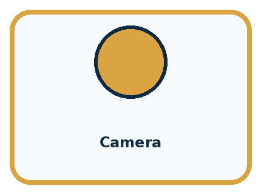
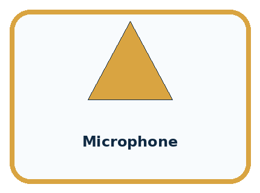
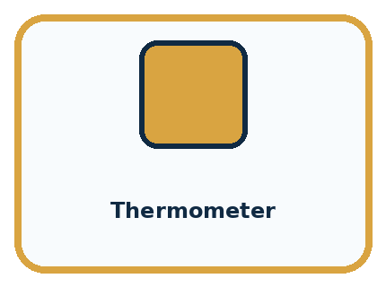
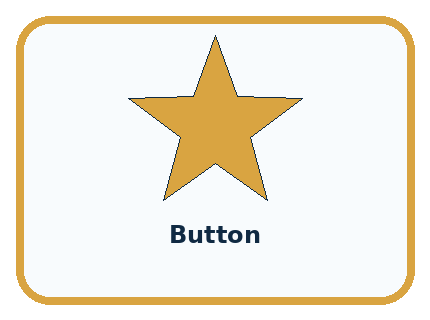
The case to investigate
CASE 1 — Camera Clue: light becomes pixel values. Meaning: measurement, not meaning.
The case to investigate
CASE 2 — Microphone Clue: air-pressure changes become samples. Meaning: measurement, not understanding.
The case to investigate
CASE 3 — Thermometer Clue: heat becomes a temperature number. Meaning: measurement, not a weather decision.
The case to investigate
CASE 4 — Button Clue: a press becomes an on/off value. Meaning: a human event becomes data.
Keep this boundary clear
BOUNDARY Do not say a sensor sees, hears, or understands. It measures and sends a representation.
Which two pictures are easiest to confuse? What evidence separates them?
Change one thing in the pictured case
Change one thing
Change: Move only B into brighter light.
Predicted result
Prediction: The next gap could change for reasons other than a difference in device accuracy.
Why the result follows
Reason: The comparison now changes location as well as device; there is no supplied reading from the new location.
Student lesson · 5 of 18
Words that unlock the idea
Use the vocabulary of Sensors Are Messengers to explain a concrete decision, rather than only memorising definitions.
VOCABULARY
Words You Can See and Use
The badge is a memory cue; the definition does the real thinking work.
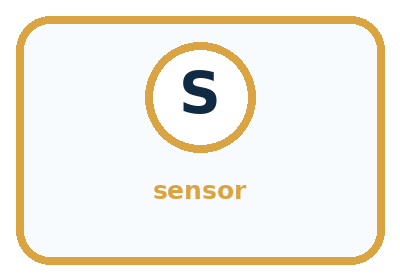
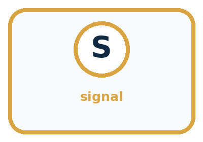
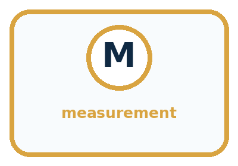
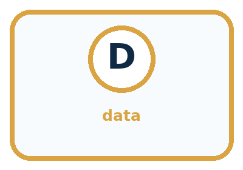
| Word | Meaning | My example |
|---|---|---|
| sensor | device that measures a physical signal | |
| signal | a changing quantity that can be measured | |
| measurement | a recorded value describing part of a signal | |
| data | represented information available for processing |
Misconception detective
Find the unsupported claim
CLAIM TO REPAIR The camera knows there is a cat.
Use one vocabulary word and one piece of evidence to repair it:
WORD POWER A strong definition helps you decide something in a new case.
Words used in the closer explanation
| Word | Meaning |
|---|---|
| Unit | An agreed amount used to express a quantity, such as a second or a degree Celsius |
| Variation | Differences among readings or observations |
| Calibration | Checking and, when appropriate, adjusting a measuring system against a reference |
Student lesson · 6 of 18
Follow a worked example
Follow the worked trace for Sensors Are Messengers, predict a step, then compare with its explanation.
WORKED EXAMPLE
Watch the Reasoning, Not Just the Answer
Every step connects a claim to observable evidence.

The case to investigate
CASE A classroom weather station measures light, sound, and temperature but does not decide what those measurements mean.
Step 1
STEP 1 — OBSERVE light, sound, or heat from the environment
Step 2
STEP 2 — TRACE a sensor converts the signal into recorded values
Step 3
STEP 3 — CONCLUDE numbers or pixel/sound data sent to a later process
Model answer
MODEL REASONING 820 could be a light measurement, 24 C comes from a temperature sensor, and changing sound values come from a microphone.
The numbers alone do not prove whether the plant needs water or whether a voice was present; later processing must interpret them.
A claim to avoid
DO NOT OVERCLAIM Do not say a sensor sees, hears, or understands. It measures and sends a representation.
What new evidence could change this answer?
A closer explanation
Worked explanation · Sensors Are Messengers
Two devices are placed side by side in a shaded room and allowed to settle. At three agreed times, device A reads 20, 21 and 20 degrees C; device B reads 22, 23 and 22 degrees C. B is 2 degrees higher on every comparison.
That pattern is evidence of a consistent difference under these test conditions.
| Time | A in degrees C | B in degrees C | B minus A |
|---|---|---|---|
| 10:00 | 20 | 22 | 2 |
| 10:05 | 21 | 23 | 2 |
| 10:10 | 20 | 22 | 2 |
Worked explanation · Sensors Are Messengers
We cannot conclude from agreement patterns alone that A is correct and B is wrong. A suitable checked reference can help investigate.
We also need to consider whether the devices have different response times, resolutions or placement. Three comparisons in one room do not prove performance in every temperature range.
Calibration is a reference check, sometimes followed by an adjustment. Do not simply subtract 2 from every future B reading because these three pairs happened to differ by 2.
A correction needs support over the conditions where it will be used.
Learn from the worked case
Cover the result before checking it. Say what is given, choose the procedure, and follow one step at a time. Then uncover the result and explain your first mismatch. Ask why a step is allowed, not only what number it produces.
A pictorial worked case: Sensors Are Messengers
Two fictional light sensors disagree in a classroom. Compare them fairly rather than declaring one broken.
The facts we will use
Supplied facts
On the same shelf, simultaneous readings are A: 40,50,60 and B: 45,55,65 in declared toy light units.
Supplied facts
Neither device has been compared with a trusted reference.


Read the picture one step at a time
Why this result follows
Why the result follows
A repeated difference of 5 supports investigating an offset between devices. Matching time and location removes two obvious comparison problems. It does not show which device is correct: both could have errors.
Preserve paired readings instead of adjusting them silently.
What this example does not establish
Keep the stated limit
Three pairs do not prove an offset holds at every light level, nor identify the accurate device.
Keep the stated limit
Read the labelled picture: Why can we calculate the earlier gap but not predict an exact new B reading?
Keep the stated limit
Change one thing: Move only B into brighter light. Predict the result before checking the explanation. What remains the same?
Student lesson · 7 of 18
Find and repair a mistake
Find the unsupported step in the Sensors Are Messengers claim and explain a repair using the supplied evidence.
COMPARE
Same Result, Different Reason
A comparison helps reveal the true concept boundary.
| Case | Evidence | What it shows |
|---|---|---|
| Camera | light becomes pixel values | measurement, not meaning |
| Microphone | air-pressure changes become samples | measurement, not understanding |
| Thermometer | heat becomes a temperature number | measurement, not a weather decision |
| Button | a press becomes an on/off value | a human event becomes data |
Repair two tempting claims
Challenge claim A
CLAIM A The camera knows there is a cat.
Repair:
Challenge claim B
CLAIM B More sensors always make a system better.
Repair:
A frame for explaining
STRONG ANSWER FRAME I claim ______ because the evidence shows ______. The process is ______. One limit is ______.
A closer explanation
Check the claim against the facts
A warning based on one temperature reading can mean the recorded value crossed a threshold. It cannot automatically mean a plant needs water. That broader claim would need different evidence.
When a system makes a surprising decision, check the units, time, location, measurement and rule in order.
Check the claim against the facts
For classroom investigations, use teacher-provided records or ordinary safe room conditions. The reasoning task does not require heating devices, opening electronics or testing people.
A clear paper investigation can reveal the same distinction between a reading and an interpretation.
Student lesson · 8 of 18
Practise together
Practise Sensors Are Messengers with support, then explain the deciding step in your own words.
GUIDED PRACTICE
Try It, Check It, Explain It
Use support now so you can succeed independently later.

Explain how the picture story demonstrates this idea: Sensors measure signals; later processing gives those signals meaning.
Use a fresh example to explain sensor.
Trace a new input → process → output example.
Find and repair the error in: More sensors always make a system better.
Invent one edge case and name the safe response.
Check with a partner
PARTNER CHECK Point to the evidence. Do not accept an answer that only repeats the vocabulary word.
A closer explanation
Suppose one classroom device reports 27 degrees C near a sunny window and another reports 22 degrees C in shade. The five-degree difference may reflect the locations. Calling one device faulty skips an alternative explanation.
First write a prediction: if location explains the difference, placing both devices together after they settle should reduce it.
A fair comparison changes the suspected factor while keeping other relevant conditions as similar as practical. Record what was changed and what remained uncertain.
Repeated results can strengthen or weaken an explanation, but a short classroom test is not a guarantee about all future measurements.
Practise with less help: Trace a boundary
Use workbook W2 for the connected example “Sensors and measurement”. First fill the input and rule boxes. Try the middle steps before asking for a hint. After a hint, try the next step yourself.
| Plan | Do | Check |
|---|---|---|
| What is given? Which rule or procedure applies? | Record each intermediate step. | Does the result follow? What remains unknown? |
Explain your trace to a partner. Your partner points to one step to check. Swap roles on the next case. Each person writes their own explanation.
Check your reasoning
Use the worked case for Sensors and measurement. Proposed explanation: “The more stable device must be accurate”. Decide whether this explanation is supported.
Point to the step or supplied fact that decides; explain your repair if needed.
Answer on your own before discussion. If you are unsure, say which step you need help with.
Explain the picture
Why can we calculate the earlier gap but not predict an exact new B reading?
This is supported practice. Keep the separately named independent case for an attempt before feedback.
Student lesson · 9 of 18
Run the investigation
Investigate Sensors Are Messengers. Record the prediction, actual observation or labelled paper trace, explanation and next test separately.
EXPLORER LAB
Signal Messenger Match
Predict first, test honestly, and explain what the evidence means.

1. Predict
State your prediction before the result is known.
2. Investigate
Complete the task: Match camera, microphone, and temperature sensors to data.
3. Compare cases
Keep a normal case and an edge case clearly separated.
4. Record honestly
Record what happened—even when it does not match your prediction.
5. Explain and plan the next test
Explain the result, one limitation, and the next useful test.
| Case | Prediction | Observed result | What it means |
|---|---|---|---|
| Normal | |||
| Edge |
Use a fresh case after support
INDEPENDENCE After support is removed, repeat the proof with a fresh case.
Plan → try → check
Before trying: what do I expect, and why? While trying: which step could first go wrong? Afterwards: what did I actually observe, and what should change? Keep “not run” if you only traced the procedure.
Student lesson · 10 of 18
Build your understanding
Move from recall to tracing, diagnosis and transfer in Sensors Are Messengers. Explain why each step is justified.
PRACTICE LADDER
Climb from Recall to Defense
Each step asks for a stronger kind of understanding.

RECALL Define sensor.
EXPLAIN Sensors measure signals; later processing gives those signals meaning.
TRACE Show the input, process, and output.
DIAGNOSE Repair: The camera knows there is a cat.
TRANSFER Apply the idea to a new home or classroom case.
CREATE Design one revealing test.
DEFEND Give a claim, evidence, mechanism, limit, and safe action.
When to retry
RETRY RULE A coached answer becomes mastery only after you solve a different case independently.
Student lesson · 11 of 18
Connect your project
Apply this week’s idea to Helpful Classroom Sorter. Keep an annotated decision and the evidence supporting it.
PROJECT
Helpful Classroom Sorter
Build one coherent system across the year, one evidence-based decision at a time.

THIS WEEK'S CHECKPOINT Mark which sensor, if any, would collect each Classroom Sorter input; prefer direct human entry when a sensor is unnecessary.
What real classroom need does this serve?
What information is necessary—and what should stay private?
What happens inside the process?
What normal and edge cases will you test?
When should it say not sure or ask a person?

Responsible design
RESPONSIBLE DESIGN Do not say a sensor sees, hears, or understands. It measures and sends a representation.
My project decision:
Evidence for your project
Save sorter measurements with device, location and time so unusual inputs can be checked before decisions.
Student lesson · 12 of 18
Show what you know
Use a genuinely new case for independent evidence. Previously discussed examples remain practice; use the separately named independent case before feedback.
MASTERY
Fresh-Case Independent Proof
Complete this after teaching and guided practice have ended.

What success looks like
REQUIRED PROOF A plant station reports 820, 24 C, and a sequence of sound values. Identify each likely sensor, its signal, and what remains unknown.
□ Name or draw the fresh case.
□ Trace input, process, and output.
□ State the conclusion and strongest evidence.
□ Name one limit, failure, missing clue, or fairness/privacy concern.
□ Explain one safe next action or improvement.
Independent evidence:
Check your explanation
SELF-CHECK 820 could be a light measurement, 24 C comes from a temperature sensor, and changing sound values come from a microphone.
The numbers alone do not prove whether the plant needs water or whether a voice was present; later processing must interpret them.
My level: □ Not yet □ With one hint □ Independently □ I can teach it
Connect to the next lesson
NEXT BRIDGE Carry today's evidence habit into: Rules or Learned Patterns?.
Student lesson · 13 of 18
Study a complete case
Revisit the complete Sensors Are Messengers case for supported practice. Repeated examples do not become fresh assessments.
Week 3 Worked case
Use the supplied details to practise the weekly concept before attempting the independent question. This case extends the illustrated lesson.
The situation
A light sensor reads 15 in a cupboard and 90 near a window. A microphone records a clap.
The question
Which measures a light-related signal? Can either directly measure happiness?
Worked explanation
The light sensor measures light; the microphone measures sound. Neither directly measures feelings. Units and calibration matter when comparing devices.
Explain it in your own words
Which detail supports the answer, and why does it matter?
Trace the supplied case visually
Two light readings, one sensor
| Evidence or stage | Value or result |
|---|---|
| Cupboard | 15 |
| Window | 90 |
A light sensor reads 15 in a cupboard and 90 near a window. A microphone records a clap.
Which measures a light-related signal? Can either directly measure happiness?
The light sensor measures light; the microphone measures sound. Neither directly measures feelings. Units and calibration matter when comparing devices.
Student lesson · 14 of 18
Try a new case independently
Attempt the reserved new case before feedback. Record support; the earlier examples below remain additional practice.
Independent case: Investigate a new measurement dispute
A classroom sound display near a speaker reads higher than one near the door. A student declares the door device broken. Propose a safe comparison using normal classroom sound.
Predict one result consistent with location explaining the difference and one result that would leave a device difference worth investigating.
Attempt this case before feedback. Record any help. Earlier examples below are further practice; a case already practised with feedback cannot establish fresh transfer.
Week 3 Independent application
Close the worked explanation. Apply the idea to this different question without copying.
A station reports light level 18 and temperature 22 degrees C. Which sensor produced each reading? Can either reading alone tell whether a child feels comfortable? Explain.
My answer, with a trace, calculation or supporting evidence
Create and test
Change one relevant detail. Predict the result before testing. Include a boundary or missing-information case when it helps reveal a limit.
My changed input and expected result
Connect to your project
Mark which sensor, if any, would collect each Classroom Sorter input; prefer direct human entry when a sensor is unnecessary.
The evidence I will keep
Your teacher has the independent answer and scoring criteria. Complete the matching workbook week to keep your practice evidence together.
Transfer practice from the original programme
Two light sensors report 40 and 80 in different rooms. Their settings and units are unknown. Can you conclude the second room is twice as bright? Design a fair comparison without using a camera or personal data.
Use feedback to improve
Attempt the independent case before hints. Record whether you worked alone, used a hint or followed a model. After feedback, fix the first unsupported step and explain why it changed.
A later check uses a changed case, not a copied answer.
Student lesson · 15 of 18
Your lesson route
Use this map to navigate Sensors Are Messengers, connect the goals to tasks and keep one evidence record for each attempt.
Start with this question: Two fictional light sensors disagree in a classroom. Compare them fairly rather than declaring one broken.
| By the end, I can | How I will show it |
|---|---|
| Describe a measurement using its quantity, value, unit and conditions | Explain the deciding step, show a trace or test, and state one limit. |
| Distinguish a sensor reading from an interpretation or decision | Explain the deciding step, show a trace or test, and state one limit. |
| Use repeated comparisons to investigate a measurement problem without inventing certainty | Explain the deciding step, show a trace or test, and state one limit. |
Remember → watch and explain → try with help → investigate → try independently → keep project evidence. Your teacher may spread this lesson across several classes.
Keep your first prediction. Compare it with what the evidence shows and explain any change.
Student lesson · 16 of 18
Finish and return
Explain Sensors Are Messengers without notes, identify a remaining question and plan a later check with a changed case.
Close your notes. Explain this goal in your own words: Describe a measurement using its quantity, value, unit and conditions
If you are unsure, return to the worked picture and explain one arrow. If you are ready, change an input or assumption and justify your prediction.
Save your workbook evidence. At the next review, try a different case before opening your old answer.
Student lesson · 17 of 18
Supported practice, repair and portfolio
Attempt supported questions before using hints or feedback. Review a missing building block, then keep the completed work.
Use this supported practice once, in the browser or on paper. Keep the reserved independent assessment for a separate first attempt before teacher feedback.
Two fictional light sensors disagree in a classroom. Compare them fairly rather than declaring one broken.
Practice 1: explain the deciding evidence
Which labelled step matches this detail? A trusted reference is needed to decide which reading is closer.
1. Compare gaps
2. Check a reference
3. Paired readings
4. Same shelf
Hint · try first
Hint if needed: Read the steps in the pictorial case. Match the supplied detail to the stage that performs or records it.
Feedback · compare after trying
After your attempt, compare with the supported explanation: Check a reference A trusted reference is needed to decide which reading is closer. A repeated difference of 5 supports investigating an offset between devices.
Matching time and location removes two obvious comparison problems. It does not show which device is correct: both could have errors. Preserve paired readings instead of adjusting them silently.
Practice 2: explain the deciding evidence
Changed case · predict first
Changed-case practice: Move only B into brighter light. Which conclusion is supported by the supplied facts?
1. The next gap could change for reasons other than a difference in device accuracy.
2. This one example guarantees correct results for every future input.
3. We can decide the result without examining the changed input or the procedure.
Hint · try first
Hint if needed: Use the changed condition and the deciding step in the pictorial trace. The answer must say what follows from those facts.
Feedback · compare after trying
After your attempt, compare with the supported explanation: The next gap could change for reasons other than a difference in device accuracy.
The comparison now changes location as well as device; there is no supplied reading from the new location.
Repair a missing building block
Review Input, Process, Output (ai-1/2). Goal: Trace information through a system without confusing information with a physical action. Short practice: Use the richer record to find blue pencils in Box B.
Explain why total alone was insufficient.. Return to this week and explain what you changed.
Keep your completed work
Use Download completed work in the hosted lesson to export your answers, reflections, practice feedback and code-run evidence. Open the HTML copy to read or print it.
Drafts stay in this browser when storage is available; clear drafts on a shared device.
Student lesson · 18 of 18
Visual concept journey
Explain each Sensors Are Messengers graphic using its labels, deciding evidence and relevant limitation.
01. Sensors Are Messengers: the case

Two fictional light sensors disagree in a classroom. Compare them fairly rather than declaring one broken. Supplied facts: On the same shelf, simultaneous readings are A: 40,50,60 and B: 45,55,65 in declared toy light units.
Neither device has been compared with a trusted reference.
Point to the given fact that matters most. Explain why it matters.
02. Follow the deciding steps

Same shelf: Place both devices together and allow them to settle. → Paired readings: Record three matching times: (40,45), (50,55), (60,65). → Compare gaps: B minus A is 5, 5 and 5 units. → Check a reference: A trusted reference is needed to decide which reading is closer.
Point to each numbered stage and explain which recorded input it uses.
03. Simultaneous light readings

Simultaneous light readings. Time 1: Sensor A = 40, Sensor B = 45, B minus A = 5. Time 2: Sensor A = 50, Sensor B = 55, B minus A = 5. Time 3: Sensor A = 60, Sensor B = 65, B minus A = 5.
Read the labels and values. Explain the relationship the model shows.
04. Change one thing. Trace what follows.

Original case: A trusted reference is needed to decide which reading is closer. Changed condition: Move only B into brighter light.
Expected result: The next gap could change for reasons other than a difference in device accuracy. Reason: The comparison now changes location as well as device; there is no supplied reading from the new location.
Predict before checking the worked changed-case result. Name what changed and what the supplied facts allow you to conclude.
05. Connect the explanation to its limit

A repeated difference of 5 supports investigating an offset between devices. Matching time and location removes two obvious comparison problems. It does not show which device is correct: both could have errors.
Preserve paired readings instead of adjusting them silently. Limit: Three pairs do not prove an offset holds at every light level, nor identify the accurate device.
Explain the case, then point to a limit on the claim.
06. Make the idea visible in your project

Save sorter measurements with device, location and time so unusual inputs can be checked before decisions. Draw your input, deciding step, result and limit.
Supported question: Why can we calculate the earlier gap but not predict an exact new B reading?
Draw your project trace and justify the deciding step using evidence.